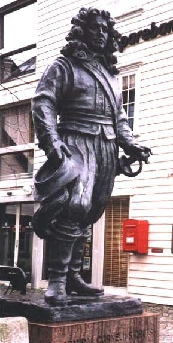
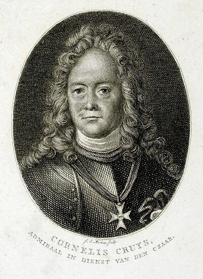
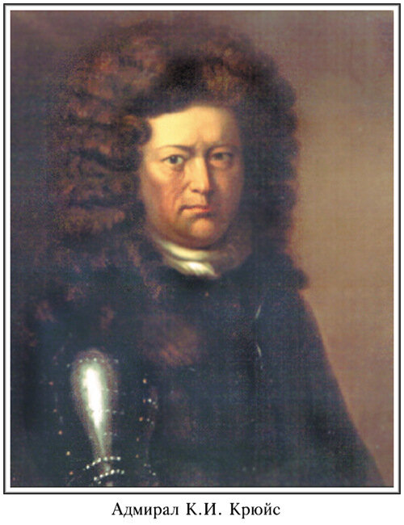

Итак, мы видели состояние нашей военно-морской терминологии к концу XVII века. Положение начало быстро меняться после прихода на русскую службу бывшего третьего экипажмейстера амстердамского адмиралтейства, уроженца норвежского Ставангера Корнелиуса Крюйса. 
Памятник К.Крюйсу в Ставангере
Должность экипажмейстера подразумевала оснащение кораблей и закупку всего необходимого для адмиралтейства. Экипажмейстер вел ведомости всех судовых принадлежностей, следил за работами мастеров на верфях, проверял их отчеты и т.д. Этот круг обязанностей волей-неволей погружал Крюйса в бездонную пучину военно-морской терминологии; вряд ли кто в то время знал все тонкости морского языка (не только голландского, но и других, в частности, английского) лучше Крюйса. Но Крюйс был не только морским чиновником высокой квалификации. Он имел почти двадцатипятилетний опыт плаваний по морям и океанам, став искусным специалистом в области навигации и кораблевождения, а кроме того, приобрёл хороший военно-морской опыт (включая каперство со всеми вытекающими из этого ремесла навыками).

Почему Петр остановил выбор на голландском моряке, а не, скажем, английском? На этот счет имеется много спекуляций. Говорили, в частности, что Петр, отдавая предпочтение англичанам в кораблестроительном искусстве, ставил английских моряков ниже голландских. Но это не так. Царь Петр пытался привлечь англичан на военно-морскую службу, чему есть достаточно документальных подтверждений. Причиной выбора кандидатов на высшие посты зарождающегося флота России из числа голландцев стало английское законодательство того времени, запрещающее морякам вступать на службу в иностранные государства. Голландия же, после завершения ряда войн, вступала в полосу мирного развития и начала существенное сокращение своего флота, разрешив, в частности, морякам своим поступать на иностранную службу. Таким образом Крюйс был принят в российский флот вице-адмиралом. Первое, что сделал новый российский адмирал – это составление устава, которому должны были подчиняться все поступающие в русскую морскую службу. Устав, состоявший из 63 статей, был исключительно суров в определении меры ответственности за нарушения его положений. По большей частью это была смертная казнь; за преступления менее тяжкие следовало отсечение или пригвождение руки к мачте. В качестве исправительных мер предусматривалось протаскивание под килем, купание с реи, битье плетьми у мачты, а также денежные штрафы и заковывание в кандалы. Судьба сыграла злую шутку с автором этого Устава. Именно на основании его статей Крюйс был приговорен в 1713 г. к смертной казни за неудачное преследование противника на море. Лишь предыдущие заслуги адмирала привели к смягчению приговора.

Но вернемся к терминологии. В октябре 1698 года, прибыв в Воронеж, Крюйс обнаружил, что на верфи царит обстановка, подобная стройплощадке у Вавилонской башни. Языки перемешаны так, что никто никого не понимает. Вице-адмирал нашел своеобразный выход из этого положения. Обычные ведомости имущества, необходимого для вооружения и снаряжения судов, он превратил в своеобразный морской словарь. (Сканы публикации этих ведомостей можно скачать здесь (1) и здесь (2)). Вот краткий обзор записей из этих ведомостей.
Первая ведомость, которая называлась «Роспись припасамъ на барколонъ по разсужденiю вице-адмирала, 1698 года ноября 28» и относилась в равной степени к 24-. 26-, 28- и 30-пушечным кораблям, начиналась перечислением парусов, затем следовал добавочный такелаж, шкиперское хозяйство и некоторые предметы повседневного обихода. Записи выглядели следующим образом:
2 паруса большихъ на середнюю большую щоглу имянуются гротъ-
сейлсъ.
2 паруса на середнюю жъ верхнюю щоглу имянуются гротъ-марсъ сейлсъ.
2 паруса на переднюю щоглу имянуются фокъ-сейлсъ.
2 паруса на переднюю верхнюю щоглу имянуются форъ-марсъ-сейлсъ.
2 паруса на кормовую щоглу имянуются безансъ-сейлсъ. …
и так далее.
Вторая ведомость – «Роспись сколько надобно лѣсныхь припасовъ по росписи вице-адмирала на одинъ корабль, 1698 года» - перечисляет в основном рангоут:
Большая середняя щогла, длиною 83 фута, толщиною 21 пальмъ.
Передняя щогла длиною 73 фута, толщиною 19 пальмъ.
Носовое кляповое дерево длиною 57 футь, толщиною 8
Корновая щогла длиною 64 фута, толщиною 14 пальмъ.
Среднее наставочное дерево длиною 56 фугь, толщиною 13 съ полу-пальмою.
На переднюю щоглу наставочное дерево длиною 46 футъ, толщиною 12 пальмъ.
и так далее.
Это не ведомости, это словарь. Первый русский морской словарь. Мачты ( щоглы) – большая средняя, передняя и кормовая – получают название грот, фок и безанс (бизань), наставочные деревья – стеньги, троенаставочные деревья – брам-стеньги и т.д. Новые имена получают и соответствующие паруса, и многочисленные снасти.
Так начинал формироваться язык русского парусного флота. Но долго еще в различных «росписях» можно было встретить такие записи:
«Съ англiйскаго языка на голландский языкъ переводилъ Августъ Мееръ, а съ голландскаго языка на русскiй переводилъ Августъ Лангъ.»